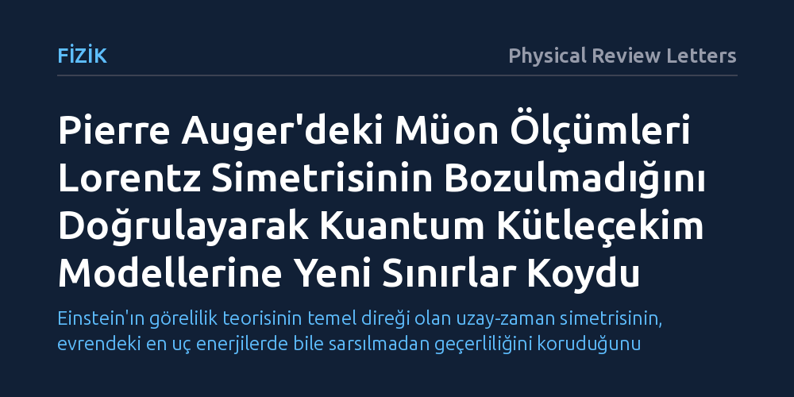

FIZIK · Physical Review Letters · 2026-09-09
Araştırmacılar, aşırı yüksek enerjili kozmik ışınların atmosferde oluşturduğu müon dalgalanmalarını inceleyerek uzay-zaman simetrisinin Planck ölçeğinde bozulup bozulmadığını araştırdı. Ölçümler Lorentz simetrisinin korunduğunu gösterdi ve olası simetri ihlallerine bugüne kadarki en sıkı deneysel sınırları getirdi.
Einstein'ın görelilik teorisinin temel direği olan uzay-zaman simetrisinin, evrendeki en uç enerjilerde bile sarsılmadan geçerliliğini koruduğunu gösterir.

Albert Einstein'ın özel görelilik kuramı, fizik yasalarının ve ışık hızının tüm eylemsiz gözlemciler için aynı olduğunu kabul eder; modern fizikte bu temel ilkeye Lorentz simetrisi adı verilir. Bir asırdan uzun süredir geçerliliğini koruyan bu simetri, uzay ile zamanın birbirine nasıl bağlandığını tarif eder ve modern parçacık fiziğinin üzerine inşa edildiği ana kaideyi oluşturur. Ancak kuantum mekaniği ile genel göreliliği tek bir çatı altında birleştirmeye çalışan kuramsal modeller, bu pürüzsüz yapının evrenin en küçük boyutlarında bozulabileceğini öngörür.
Kuantum kütleçekimi teorilerinin önemli bir kısmı, Planck ölçeği olarak bilinen ve bilinen fiziğin sınırını çizen aşırı küçük mesafelerde uzay-zamanın kesikli veya köpüksü bir yapıya bürünebileceğini ileri sürer. Bu ölçeğe yaklaşıldığında Lorentz simetrisinin kırılabileceği veya bükülebileceği düşünülür. Eğer bu simetri kırılması gerçekse, evrendeki en yüksek enerjili parçacıkların saçılma ve yayılma süreçlerinde küçük sapmaların ortaya çıkması gerekir. Bu nedenle söz konusu simetrinin sınırlarını test etmek, kuantum kütleçekimi kuramlarını deneysel olarak sınamanın en somut yollarından biridir.
Yeryüzündeki insan yapımı hiçbir parçacık hızlandırıcının Planck ölçeğindeki enerjilere ulaşması mümkün değildir. Bu sebeple araştırmacılar, evrenin derinliklerinden gelen ve laboratuvar ortamında ulaşılamayacak enerjilere sahip aşırı yüksek enerjili kozmik ışınları doğal bir laboratuvar olarak kullanır. Bu olağanüstü parçacıklar Dünya atmosferine girdiklerinde hava molekülleriyle şiddetle çarpışır ve milyarlarca ikincil parçacıktan meydana gelen geniş hava sağanakları oluşturur. Bu sağanakların en belirleyici bileşenlerinden biri ise müon adı verilen ağır temel parçacıklardır.
Pierre Auger İşbirliği, Arjantin'in batısında 3.000 kilometrekarelik geniş bir alana yayılan yüzey dedektörleri ve floresan teleskoplarıyla bu sağanakları uzun yıllar boyunca kaydetmiştir. Atmosferdeki çarpışma enerjileri doğrudan Planck seviyesine çıkmasa da, sağanaklar arasında üretilen müon sayılarındaki dalgalanmalar, parçacık kinematiğindeki en ufak simetri sapmalarına karşı bile hassastır. Araştırmacılar, gözlemevinde kaydedilen müon dalgalanması verilerini, olası bir Lorentz simetrisi ihlali öngören kuramsal simülasyonlarla ayrıntılı biçimde kıyaslamıştır.
Pierre Auger Gözlemevi'nden elde edilen hassas gözlem verileri, kozmik ışın sağanaklarındaki müon dalgalanmalarında Lorentz simetrisinin ihlal edildiğine dair hiçbir ölçülebilir sapma bulunmadığını gösterdi. Yüksek enerjili parçacıkların atmosferdeki saçılma, etkileşim ve bozunma örüntüleri, standart görelilik kurallarının çizdiği çerçeveyle tam bir uyum sergiledi.
Herhangi bir simetri ihlali sinyali tespit edilememesi, kuramsal fizik açısından oldukça kıymetli bir kısıtlama sağladı. Araştırma ekibi, elde edilen verileri kullanarak kuantum kütleçekim kuramlarının öngördüğü olası Lorentz ihlali parametrelerine bugüne kadarki en sıkı deneysel üst sınırları getirdi. Böylece Planck ölçeğinde belirgin simetri kırılmaları öngören birçok kuramsal senaryo doğrudan elenmiş oldu.
Elde edilen sonuçlar, Einstein'ın uzay-zaman tasvirinin aşırı yüksek enerjilerde bile olağanüstü derecede sağlam kaldığını ortaya koymaktadır. Evrenin en enerjik süreçlerinde dahi Lorentz simetrisinin bozulmadığının görülmesi, genel görelilik ile kuantum mekaniğini birleştirmeye çalışan fizikçilere hangi kuramsal yolların çıkmaz sokak olduğunu açıkça göstermektedir.
Bu çalışma Lorentz simetrisinin mutlak surette sonsuza kadar geçerli olduğunu tek başına kanıtlayamaz; ancak olası bir simetri bozulması varsa bunun etkilerinin tahmin edilenden çok daha derinlerde saklı olması gerektiğini belgeler. Gelecek yıllarda devreye girecek daha hassas gözlem teknikleri ve yenilenen dedektör donanımları, uzay-zamanın dokusunu en uç sınırlarda araştırmayı sürdürecektir.